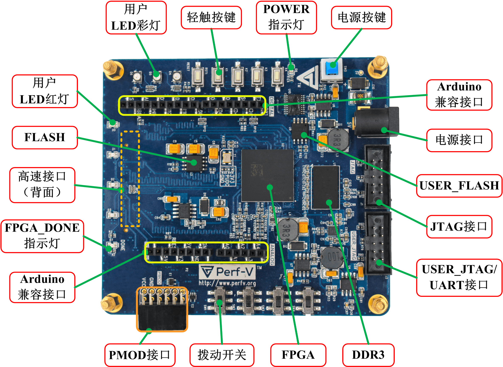

简介
Perf-V Model I 工程板是澎峰科技为RISC-V开源社区设计的FPGA开发板。它集成了各种外设芯片，提供多种接口，具备强大的灵活性，成功的移植了多种RISC-V处理器架构，并配备了丰富的学习资料，为RISC-V处理器设计和FPGA产品开发提供了良好的实验平台。
特点
- 采用Xilinx Artix-7 FPGA、Vivado软件开发，专为RISC-V开源社区和FPGA学习爱好者设计的开发板。
- 集成各种外设芯片，提供丰富的外设接口，包括PMOD、Arduino、JTAG、UART接口以及可供扩展HDMI、VGA、USB2.0/3.0、摄像头、蓝牙、扩展板等的高速接口，灵活性强。
- 基于Perf-V自主开发的智能小车，可利用手机蓝牙控制小车的运动，并可实现自动寻迹和避障功能。
- 成功移植了多种RISC-V架构，为RISC-V处理器设计和FPGA产品开发提供了良好的实验平台，是学习、科研、项目开发、DEMO方案的首选硬件。
- 多款模块可供选配，功能强大，学习资料丰富，实验例程齐全，性价比高。
- 面向电子设计工程师、硬件DIY爱好者、各种发烧友、高校师生等各类群体。
主要芯片
| 名称 | 数量 | 芯片 | 特点 | |
| FPGA | 1 | XC7A35T-1FTG256C (可选) |
逻辑单元 | 33280 |
| 乘法器 | 90 | |||
| 可配置逻辑块 | 41600 | |||
| Block RAM(Kb) | 1800 | |||
| 时钟单元 | 5 | |||
| XC7A50T-1FTG256C （可选） |
逻辑单元 | 52160 | ||
| 乘法器 | 120 | |||
| 可配置逻辑块 | 65200 | |||
| Block RAM(Kb) | 2700 | |||
| 时钟单元 | 5 | |||
| XC7A75T-1FTG256C （可选） |
逻辑单元 | 75520 | ||
| 乘法器 | 180 | |||
| 可配置逻辑块 | 94400 | |||
| Block RAM(Kb) | 3780 | |||
| 时钟单元 | 6 | |||
| XC7A100T-1FTG256C （可选） |
逻辑单元 | 101440 | ||
| 乘法器 | 240 | |||
| 可配置逻辑块 | 126800 | |||
| Block RAM(Kb) | 4680 | |||
| 时钟单元 | 6 | |||
| FPGA FLASH | 1 | N25Q064A | 8MB(64Mbit) | |
| RISC-V FLASH | 1 | N25Q064A | 8MB(64Mbit) | |
| DDR3 | 1 | MT41J128M16JT | 256MB(16Megx16x8Banks) | |
支持的RISC-V Core
合作


购买
- 澎峰淘宝店铺
- Seeed Studio (海外用户): Perf-V 35T, Perf-V 100T
技术交流群
- QQ群：806854399